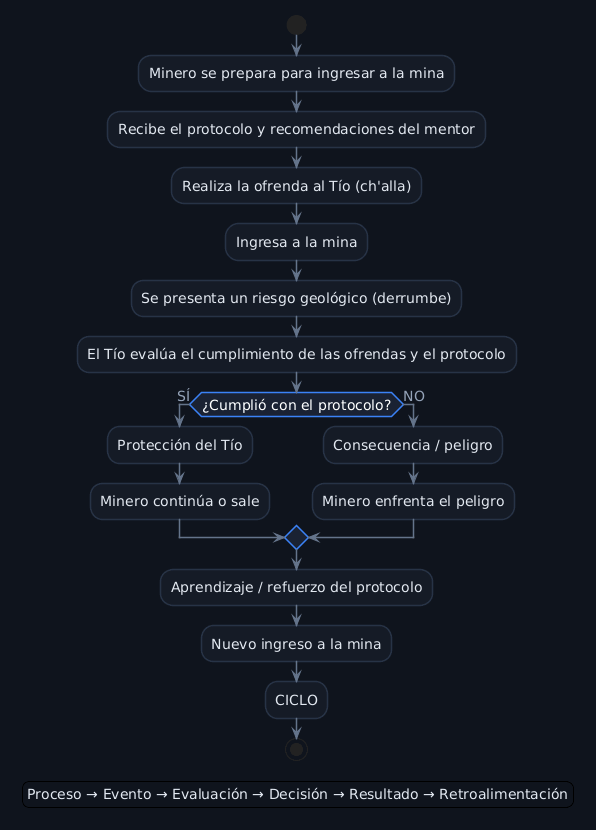

El Tío de la Mina
Del relato oral del Cerro Rico de Potosí a un sistema de protección minera en tiempo real — un proyecto que conecta tradición andina e Ingeniería de Sistemas.
Relato
El Tío de la Mina — tradición oral y cultura minera de Potosí, Bolivia.
Pregunta central
¿Cómo funciona el sistema completo del relato y qué actores, procesos e información intervienen?
Reinterpretación
Sistema de monitoreo y seguridad minera en tiempo real: sensores, alertas y protocolos de protección.
El relato original
En el Cerro Rico de Potosí, los mineros veneran a El Tío: amo y señor de las profundidades. No es el diablo católico ni tampoco un dios benigno — es una figura ambigua que puede proteger a quien lo respeta... o castigar a quien lo desprecia.
Antes de bajar a los socavones, los mineros realizan la ch'alla: una ofrenda de coca, alcohol y cigarros que se hace frente a las estatuas de El Tío repartidas por la mina. Es un ritual de reciprocidad — se le da, para recibir protección a cambio.
Nuestro relato sigue a un joven minero en su primer descenso al socavón, guiado por un minero veterano que le enseña a respetar al que manda en la oscuridad. Cuando la montaña se derrumba, es El Tío quien decide su destino.
Fuente
Tradición oral y cultura minera del Cerro Rico, Potosí, Bolivia.
De la leyenda al sistema
El relato original no explica solo una creencia — describe, sin saberlo, un sistema completo de gestión de riesgo: una entrada (la ofrenda), un proceso (la evaluación de El Tío) y una salida (protección o desgracia).
Esa misma estructura es la que existe hoy en cualquier mina real, solo que resuelta con tecnología en vez de ritual: sensores que "reciben" información constantemente, un sistema que la analiza, y una alerta que decide cuándo actuar.
Entonces
El minero ofrece coca, alcohol y cigarro. El Tío observa desde la oscuridad y decide: protección o castigo.
Hoy
Sensores de gas, temperatura y vibración envían datos constantes. Un sistema central los analiza y decide: alerta o vía libre.
Camino del Héroe
Las 10 etapas aplicadas al joven minero protagonista de la historia.
- 01Mundo ordinarioUn joven minero se prepara para su primer descenso al Cerro Rico.
- 02LlamadoLa necesidad de trabajar lo obliga a bajar a las profundidades por primera vez.
- 03DudaEl nerviosismo y el desconocimiento de las reglas de la mina lo hacen dudar.
- 04Mentor o ayudaEl minero veterano le enseña el protocolo de respeto: la ch'alla frente a El Tío.
- 05Cruce del umbralRealiza la ofrenda y cruza la boca de la mina hacia la oscuridad.
- 06PruebasAvanza por galerías cada vez más estrechas y pesadas, en busca de la veta.
- 07Gran desafíoUn derrumbe lo atrapa; queda solo, en peligro real, en la oscuridad.
- 08RecompensaEl Tío se revela y reconoce su respeto — le abre un camino de salida.
- 09RegresoEl joven emerge a la superficie, agotado pero vivo.
- 10TransformaciónComprende que la protección exige respeto y ofrenda constante — un ciclo que ya nunca rompe.
Storyboard — 19 escenas
Guion completo con dirección visual, continuidad entre escenas y perfiles de voz por personaje.
Parte A — El relato original (≈2:20)
Escena 01 — Apertura: Potosí y el Cerro Rico
Plano general del Cerro Rico al amanecer, niebla disipándose. Paneo lento descendente. Título "EL TÍO DE LA MINA" en fade-in, centrado, 3-4 seg.
Narrador: "En lo alto de los Andes bolivianos se alza el Cerro Rico de Potosí. Durante siglos, sus entrañas han dado plata al mundo... y han exigido, a cambio, un precio."
Escena 02 — La vida en la mina
Continuación del paneo, nivel de calle, mineros preparándose. Termina siguiendo al grupo hacia la entrada.
Narrador: "Cada mañana, cientos de mineros descienden a la oscuridad. Conocen el peligro: derrumbes, gas, galerías que pueden cerrarse en un instante."
Escena 03 — Presentación del protagonista
La cámara aísla al joven minero, plano medio, nervioso, ajustándose el casco.
Narrador: "Entre ellos, un joven minero se prepara para bajar por primera vez a las profundidades."
Escena 04 — El mentor
El veterano entra en cuadro, mano en el hombro del joven.
Minero veterano: "Aquí abajo no estás solo, muchacho. Antes de bajar, hay que respetar al que manda en la oscuridad."
Escena 05 — Presentación de la creencia
Zoom-in lento hacia la estatua de El Tío rodeada de ofrendas.
Narrador: "Los mineros lo llaman El Tío. Amo y señor de las profundidades. Dicen que puede proteger... o puede castigar."
Escena 06 — El ritual de la ch'alla
Ofrenda de coca, alcohol y cigarro frente a la estatua. Plano cercano a las manos.
Minero veterano: "Dale de beber, dale de fumar. Pídele permiso. Y no te lleves nada de aquí sin agradecer."
Narrador: "Así comienza la ch'alla: la ofrenda que abre camino hacia las vetas... y hacia la protección."
Escena 07 — El descenso
Cambio de escenario: exterior → interior. Fundido a negro que se abre con la luz de la lámpara.
Narrador: "Con la ofrenda hecha, el joven minero cruza el umbral de la mina."
Escena 09 — El peligro
Temblor, rocas caen, derrumbe. Polvo cubre el encuadre.
Narrador: "Entonces, la montaña recuerda su peligro."
Escena 10 — El momento crítico
El joven queda atrapado, oscuridad casi total, solo su lámpara.
Narrador: "En ese instante, el joven recordó las palabras del veterano: que aquí abajo, nunca se está solo."
Escena 11 — La aparición de El Tío
La luz revela poco a poco la figura de El Tío. Plano-contraplano.
El Tío: "Has entrado en mis dominios sin miedo... y me has dado lo que se me debe. Coca, alcohol, humo. Por eso, hoy, no vengo a cobrarme nada."
Escena 12 — El diálogo con El Tío
Su mano señala la oscuridad, donde aparece una grieta de luz.
Joven minero: "Solo quiero salir con vida... y volver a ver el cielo."
El Tío: "Eso ya lo decidiste tú, muchacho, la noche que me ofrendaste sin que nadie te obligara. Yo solo... recuerdo a los que me respetan."
Escena 13 — El regreso
Cambio de escenario: interior → exterior. La grieta se abre hasta la luz del día.
Narrador: "Cuando volvió a ver el cielo, comprendió que no había sido solo suerte... ni solo esfuerzo. Había sido respeto."
Escena 14 — Cierre reflexivo
El joven deja una nueva ofrenda. La cámara se aleja hasta el plano general con el que abrió la Escena 1.
Narrador: "Desde entonces, cada mañana, hace su ofrenda sin falta. Porque en el Cerro Rico, todos saben: El Tío no es bueno ni malo. Es, simplemente, el que decide."
Parte B — Reinterpretación actual (≈0:40)
Escena 15 — Transición
Fundido a negro → texto: "Hoy, la protección de los mineros toma otra forma".
Narrador: "La leyenda de El Tío nació de una necesidad muy real: sobrevivir a los peligros de la mina. Hoy, esa misma necesidad se resuelve con tecnología."
Escena 16 — Sensores y proceso en tiempo real
Mockup de sensores en la mina; zoom hacia un dashboard de control.
Narrador: "En lugar de coca y alcohol, hoy se ofrecen sensores: de gas, de temperatura, de vibración. Cada dato es analizado en tiempo real por un sistema central."
Escena 17 — La alerta
Alerta roja se activa en el dashboard; mapa marca la zona de riesgo.
Narrador: "Cuando el sistema detecta que algo no está bien, no espera a que ocurra la desgracia: envía una alerta inmediata."
Escena 18 — Protocolo de seguridad
Equipo de seguridad recibe la alerta; evacuación. Split screen final: El Tío / dashboard.
Narrador: "El Tío vigilaba desde la oscuridad, decidiendo entre proteger o castigar. Hoy, ese mismo cuidado lo ofrece un sistema que no depende de la suerte... sino de los datos."
Parte C — Créditos (≈0:15)
Escena 19 — Cierre
El split screen se desvanece hacia el Cerro Rico al atardecer. Créditos superpuestos.
Video final
Video narrativo completo — Partes A, B y C integradas (~3:8 min).
Si no puedes reproducir el video, míralo directamente en este enlace directo de YouTube .
Uso de Inteligencia Artificial
Herramientas utilizadas: Gemini AI y Claude AI. El guion, la continuidad de escenas y el storyboard se desarrollaron con Claude AI; la generación visual de cada escena se hizo con Gemini AI, usando un chat nuevo por escena con un texto de contexto fijo para mantener consistencia de estilo y personajes.
Antes de cada escena, se pegaba este bloque de contexto en un chat nuevo para mantener coherencia visual entre generaciones independientes:
Instrucción visual + audio enviada a Gemini AI para la escena de apertura:
Audio: viento andino suave, ecos lejanos de herramientas mineras.
Narrador: "En lo alto de los Andes bolivianos se alza el Cerro Rico de Potosí. Durante siglos, sus entrañas han dado plata al mundo... y han exigido, a cambio, un precio."
En el primer intento no le pedí a la IA que incluyera el título — solo generé el paisaje del Cerro Rico, y salió bastante bien: el paneo descendente y la niebla se veían tal como los pedí. Después, en un segundo intento, sí incluí el título dentro del prompt para que apareciera directamente en el video. Ahí surgió el problema: el texto "EL TÍO DE LA MINA" aparecía solo por un instante y se ocultaba casi de inmediato, apenas un segundo en pantalla, sin dar tiempo a leerlo.
El texto del título generado directamente por la IA salía con letras deformadas e ilegibles — limitación común de los modelos de generación de video con texto incrustado.
Ajusté el prompt para ser más específico con los tiempos: especifiqué que el título debía aparecer a los 2 segundos y permanecer en pantalla 4 segundos, con un fade-in y fade-out más suaves, además de precisar mejor la tipografía (tallada en piedra, dorado óxido). Volví a generar la escena completa con ese prompt corregido.
Con el prompt ajustado, el título ahora aparece de forma clara y permanece el tiempo suficiente para leerse completo, con una transición mucho más natural que en el primer intento. El resultado final se ve más limpio y profesional, todo logrado ajustando el prompt, sin necesidad de editar nada por fuera.
Durante el proceso de generación se eliminó la Escena 8 (interior de la mina, avance del grupo) por considerarse relleno con la Escena 7 y la Escena 9 — ejemplo de cómo el uso de IA llevó a una revisión y mejora del guion original, no solo de las imágenes.
Mención — Ingeniería de Sistemas
¿Cómo funciona el problema completo y qué actores, procesos, información y recursos intervienen?
Actores y función
| Actor | Función |
|---|---|
| Joven minero | Usuario/operador del sistema. Ingresa al entorno de riesgo, sigue el protocolo y enfrenta el peligro. |
| Minero veterano | Transmisor del protocolo de seguridad y respeto antes del ingreso. |
| El Tío | Regulador del sistema: evalúa el cumplimiento del protocolo y decide el resultado. |
| Otros mineros | Comunidad que opera bajo el mismo sistema de creencias/protocolo. |
| La mina | Entorno físico que contiene los riesgos que el sistema debe gestionar. |
Entrada → Proceso → Salida
Entrada
Ofrenda del minero (ch'alla) y decisión de ingresar a la mina.
Proceso
El Tío evalúa el cumplimiento del protocolo; la mina genera un evento de riesgo.
Salida
El minero sale con vida; se refuerza el protocolo para el siguiente ciclo.
Diagrama del proceso

Problema identificado
El sistema tradicional depende de un protocolo simbólico y no verificable en tiempo real frente a riesgos físicos reales y medibles. La alerta solo llega cuando el peligro ya se manifestó.
Propuesta de mejora
Un sistema de monitoreo y seguridad minera en tiempo real: sensores de gas, temperatura y vibración (entrada) → análisis central continuo (proceso) → alerta automática al equipo de seguridad antes del derrumbe (salida). Convierte una protección reactiva y simbólica en una protección preventiva y basada en datos.
Conclusiones
Al analizar la relación entre la mitología andina y los fundamentos de la Ingeniería de Sistemas, se evidencia que la estructura de la leyenda de El Tío describe un sistema dinámico completo compuesto por entradas (la ofrenda), un proceso central (la determinación de la entidad) y salidas (protección o contingencia). Aunque en la actualidad este problema de seguridad se resuelve mediante redes de sensores de telemetría y alertas automatizadas en tiempo real en lugar de un ritual analógico, la lógica subyacente permanece invariable. Ambos modelos, el tradicional y el tecnológico, comparten el mismo objetivo de mitigación predictiva del riesgo, lo que permite valorar la sabiduría práctica presente en tradiciones como la ch'alla, cuya efectividad empírica se valida hoy a través de la implementación técnica y el análisis de datos.
Finalmente, el proceso de producción multimedia demostró que el trabajo con herramientas de Inteligencia Artificial exige un enfoque iterativo y riguroso. La necesidad de revisar el material, detectar anomalías como la deformación de textos y corregir las instrucciones en múltiples ocasiones confirmó que la automatización requiere de una supervisión analítica constante. Este ciclo de retroalimentación y optimización continua refleja de manera exacta la metodología aplicada en la Ingeniería de Sistemas, donde la identificación de fallas y el ajuste del proceso determinan el éxito del resultado final.